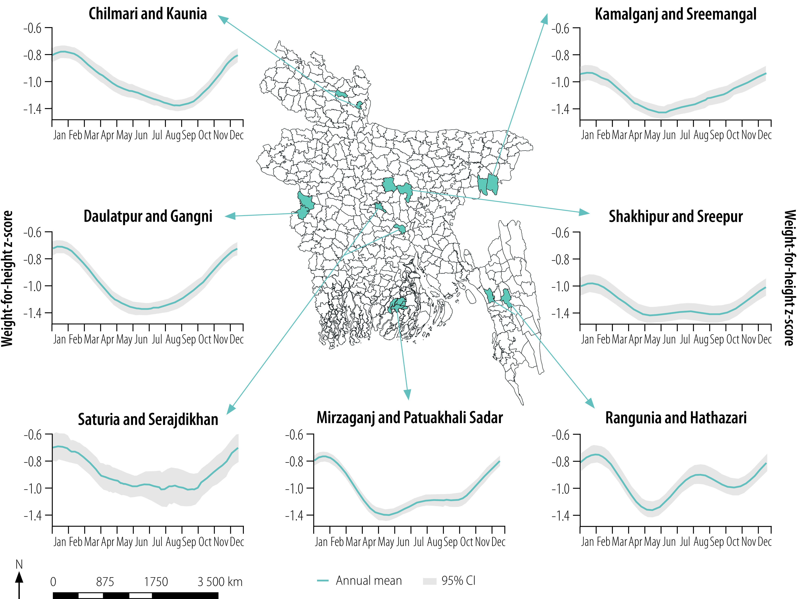
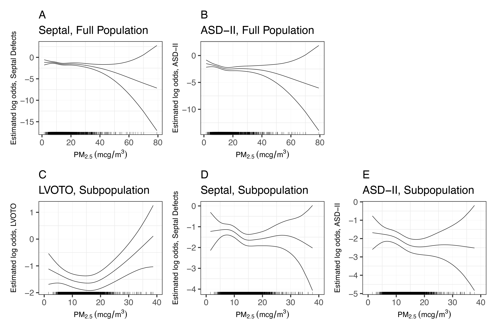
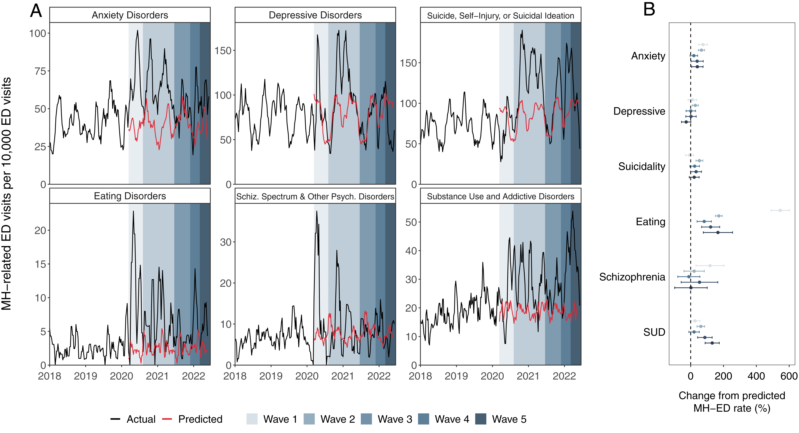
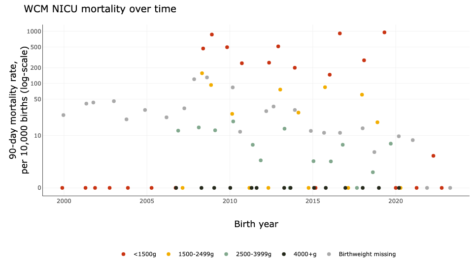
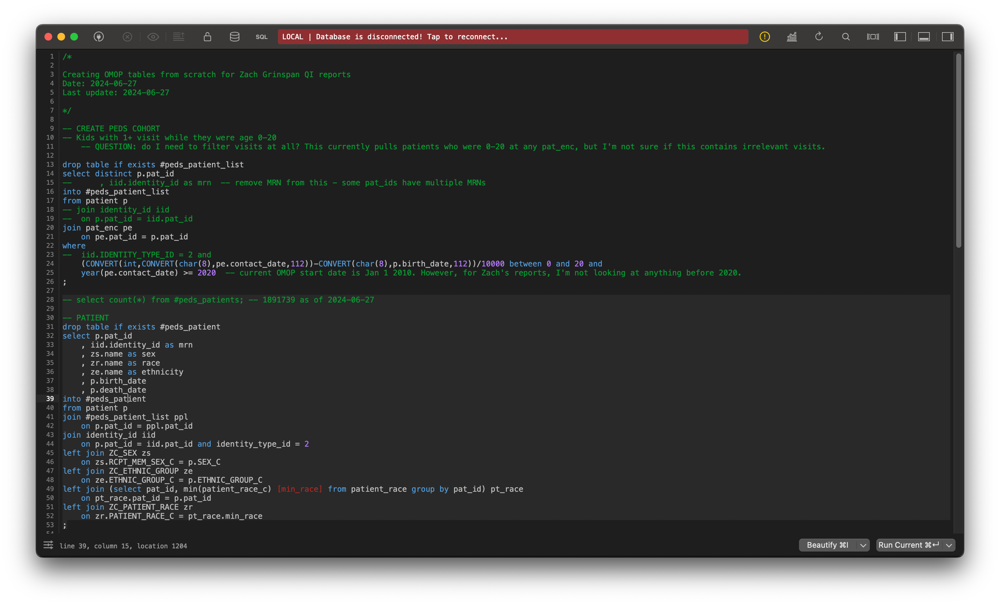
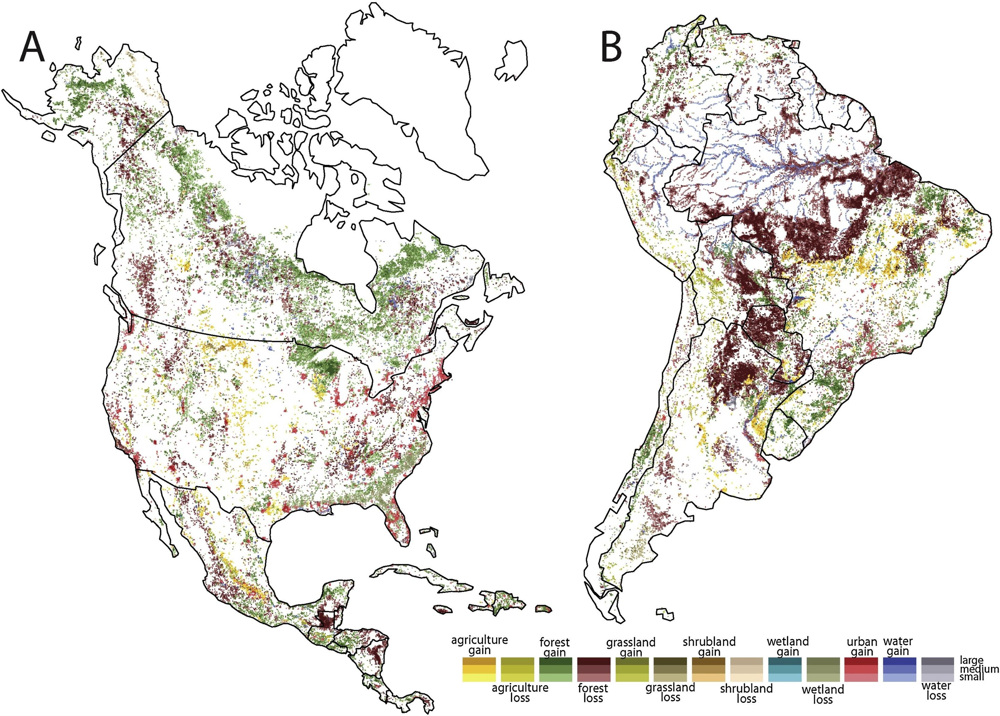
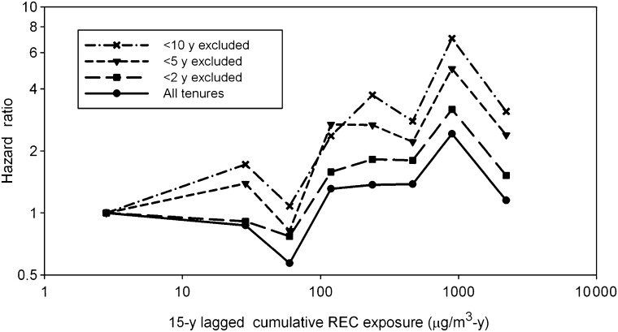

Environmental epidemiology and biostatistics
Will Simmons
12 July 2024
Weill Cornell Medicine Biostatistics
About me
Education
About me
Experience in environmental health methods
About me
Experience in environmental health methods
IRI:
Climate exposures and nutrition in Bangladesh

About me
Experience in environmental health methods
IRI:
Climate exposures and nutrition in Bangladesh
Master’s research:
Extreme heat, air pollution, and congenital heart defects

About me
Current work as a hospital biostatistician
About me
Current work as a hospital biostatistician
Pediatric mental health 
Quality of care 
Chronic kidney disease 
SQL database management 
What is environmental epidemiology?
What is environmental epidemiology?
- Study of environmental exposures and how they affect human health outcomes
- Quite broad!
What about biostatistics?
What about biostatistics? (1/2)
- Environmental epidemiology impossible without biostatistics!
- Methods matter, especially with “contentious” topics
- Accurate communication of methods and results, too!
What about biostatistics? (2/2)
As biostatisticians in environmental research, we can expect:
- Messy and complex data
- Novel methods or combinations of methods
- Many interacting exposures
Environmental health data
- Time series
- Geospatial
- Spatiotemporal
- Longitudinal/hierarchical
- High-dimensional
- Combinations thereof
Time series
- Data with time frequency (e.g., every year, every minute)

Geospatial
- Data with some spatial component
- Stored as raster (grid), vector (polygons), and/or tabular data
Geospatial
Example: map of environmental degradation in the Americas
Spatiotemporal
- Spatial data that changes over time
- Technically, all spatial data changes over time!
- Depends on your analytic time window
- And data availability
Spatiotemporal

Example: forecast map of wildfire smoke in USA
Hierarchical/longitudinal
- Data with some sort of “nesting” or hierarchy
- Example: individuals within cities within countries
- Data from each level must be considered in models
- Data from each level must be considered in models
- Note: longitudinal health data is nested by individual
High-dimensional
- Increasing availability of genomic, metabolomic, epigenomic, and other data
- Often thousands (or more) features
- Which are important?
Various combinations of all of these!

Example: this spatiotemporal data could be clustered by NYC borough
Example studies
Extreme heat, air pollution, and congenital heart defects
The Diesel Exhaust in Miners Study (DEMS)
Modeling complex effects of exposure to particulate matter and extreme heat during pregnancy on congenital heart defects
Simmons et al, 2021 (Science of the Total Environment)
Importance
Note: PM2.5 = airborne particulate matter ≤2.5 μm in diameter, which penetrate deeply into the lungs
Background
- Congenital heart defects (CHDs) are the most common group of birth defects
- Evidence for effects of extreme heat, pollution on risk of CHDs
This study
- Question: Do extreme heat and PM2.5 during pregnancy interact to increase offspring CHD risk?
- Finding: yes, for some CHDs
Methods
PM, extreme heat, and congenital heart defects, 2012
- Study populaton: National Birth Defects Prevention Study (NBDPS)
- Environmental data
- PM2.5: nearest EPA PM2.5 monitor within 50km
- Extreme heat: participants geocoded and extreme heat days counted at residence
- Logistic regression models: interaction term between extreme heat days and PM2.5 levels
Results
PM, extreme heat, and congenital heart defects, 2012
With a high number of extreme heat days during pregnancy (15+), each 5 μg/m³ increase in average PM2.5 exposure was associated with:
- Perimembranous ventricular septal defects (OR: 1.54 [95% CI: 1.01, 2.41])
- Septal defects (OR: 1.39 [95% CI: 1.00, 1.93])
The Diesel Exhaust in Miners Study (DEMS)
Attfield et al, 2012 (Journal of the National Cancer Inst.)
Importance
Diesel Exhaust in Miners Study (DEMS), 2012
- Machines in mines use diesel engines to extract ore
- Poor ventilation causes dangerous exposures, but this wasn’t always agreed upon
- First study to demonstrate link between diesel exhaust and lung cancer
- Led WHO to categorize diesel exhaust as human carcinogen
Methods
Diesel Exhaust in Miners Study (DEMS), 2012
- Study of 12,135 workers exposed to diesel exhaust at eight US mining facilities
- Carbon exposure quantified for each worker using external data
- Association with cancers estimated, with confounders (e.g., tobacco use) considered
Results
- Those with higher estimated exposures had increased risk of lung cancer
- Risk also increased by years spent as miner (“tenure”)
- Lung cancer HR = 5.01, 95% CI = 1.97 to 12.76
For miners with ≥5 years of tenure and estimated exposure of 640 to <1280 μg/m3/yr (versus no exposure)

Controversy
Diesel Exhaust in Miners Study (DEMS), 2012
- Academic journals, including The Lancet, received threats from industry-funded Mining Awareness Resource Group
- Unspecified “consequences” promised if results were published
- Without scientific study, though, WHO couldn’t reclassify as carcinogen
- Seminal paper finally published in 2012, nearly two decades after study created
Challenges facing the field
Challenges facing the field
- Identifying meaningful, relevant questions
- Environmental exposures disproportionately affect people of color and low-income countries
- Environmental exposures disproportionately affect people of color and low-income countries
- Integrating shifts and complexities in:
- Demographic (aging, urbanization, migration)
- Environmental exposures (climate change)
- Data sources (genomics, epigenetics, metabolomics)
- Exposure measurement challenges
- Equity of data availability and production
thanks!
questions?
Citations and further reading
Citations:
Simmons et al. Modeling complex effects of exposure to particulate matter and extreme heat during pregnancy on congenital heart defects. Sci Total Environ. (2022). doi: 10.1016/j.scitotenv.2021.152150.
M. Attfield et al. The Diesel Exhaust in Miners Study: A Cohort Mortality Study With Emphasis on Lung Cancer. J Natl Cancer Inst. (2012). doi: 10.1093/jnci/djs035.
B. Furlow. Industry group “threatens” journals to delay publications. Lancet Oncol (2012). doi: 10.1016/s1470-2045(12)70094-3.
Further reading:
Tonne et al. New frontiers for environmental epidemiology in a changing world. Environment International (2017). doi: 10.1016/j.envint.2017.04.003.
A. M. Vicedo-Cabrera et al. The burden of heat-related mortality attributable to recent human-induced climate change. Nature Climate Change (2024). doi: 10.1038/s41558-021-01058-x.
Michelle L. Bell, Antonio Gasparrini, and Georges C. Benjamin. Climate Change, Extreme Heat, and Health. New England Journal of Medicine (2024). doi: 10.1056/NEJMra2210769.